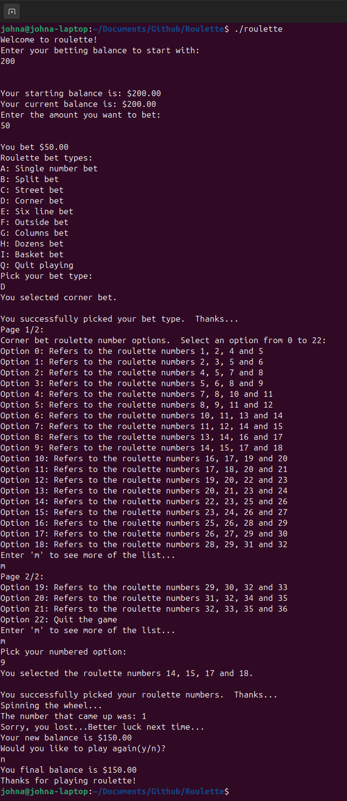

This section describes some projects I've been working on, mainly related to computer programming and coding.
I recently wrote a text-based roulette game in C++. I tried to base it on the American roulette rules as best I could. The game simulates the setting of the players starting balance, the bet type they want to make, the amount of money they want to bet, the spin of the roulette wheel, whether they won or lost, the updated player balance after spinning the wheel and whether or not they want to play again. The code for the game can be found at this Github roulette repository. A screenshot of the game play is shown below:
This project is an analysis of exoplanets, which are planets outside our solar system, using the R programming language (R markdown specifically) and Github pages. The full analysis can be found here at: Exoplanet Analysis Link. The exoplanet data that I worked with for this analysis can be found in the NASA Exoplant Archive. For the analysis I looked a few different things such as the methods of discovery for the different planets, a distribution of planet masses, the orbital periods of a few planets, and so on. The code for analysis can be found at this Exoplanet Analysis Repository.
This project involve performing Monte Carlo simulations for several different types of scenarios using Python. Monte Carlo simulations are used to predict the chances of various outcomes in a scenario using inputs of random variables. This project involved using this type of simulation for a number of situations, including predicting the value of pi, modelling X-ray photon transport in Lucite, determining the distribution of molecule speeds in a gas at a temperature of 30 degrees Celsius and some other scenarios. These examples and their code can be found in this Monte Carlo Simulation Repository. The pictures below show examples of Monte Carlo simulations of determining the value of pi, X-ray photon transport in Lucite and estimating the distribution of molecule speeds in a gas at a certain temperature.